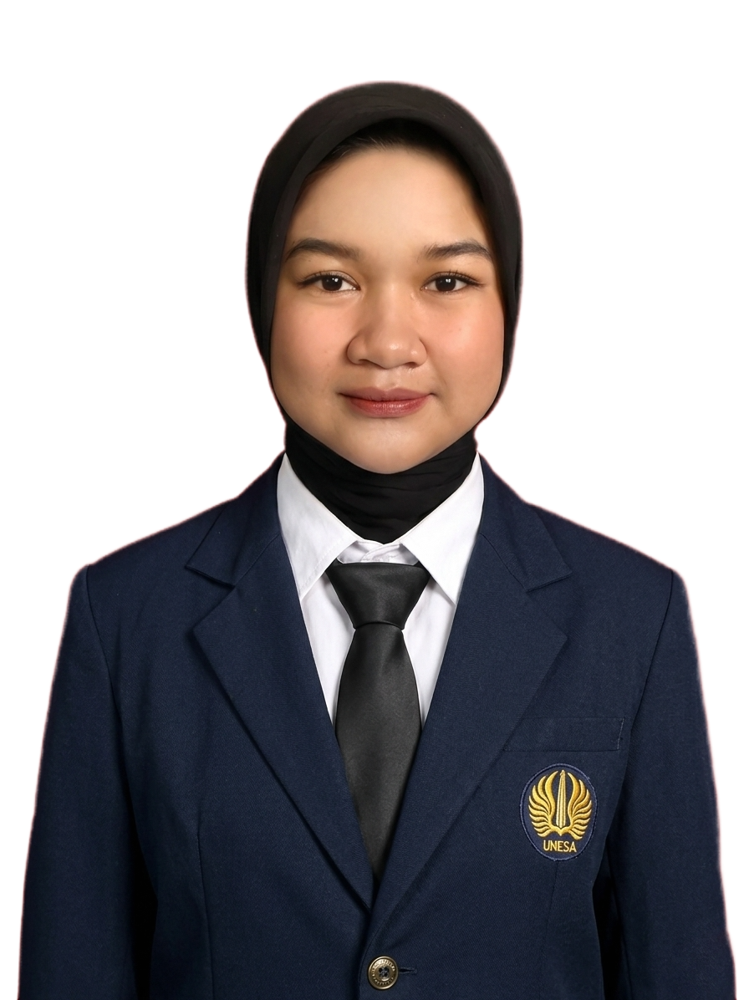
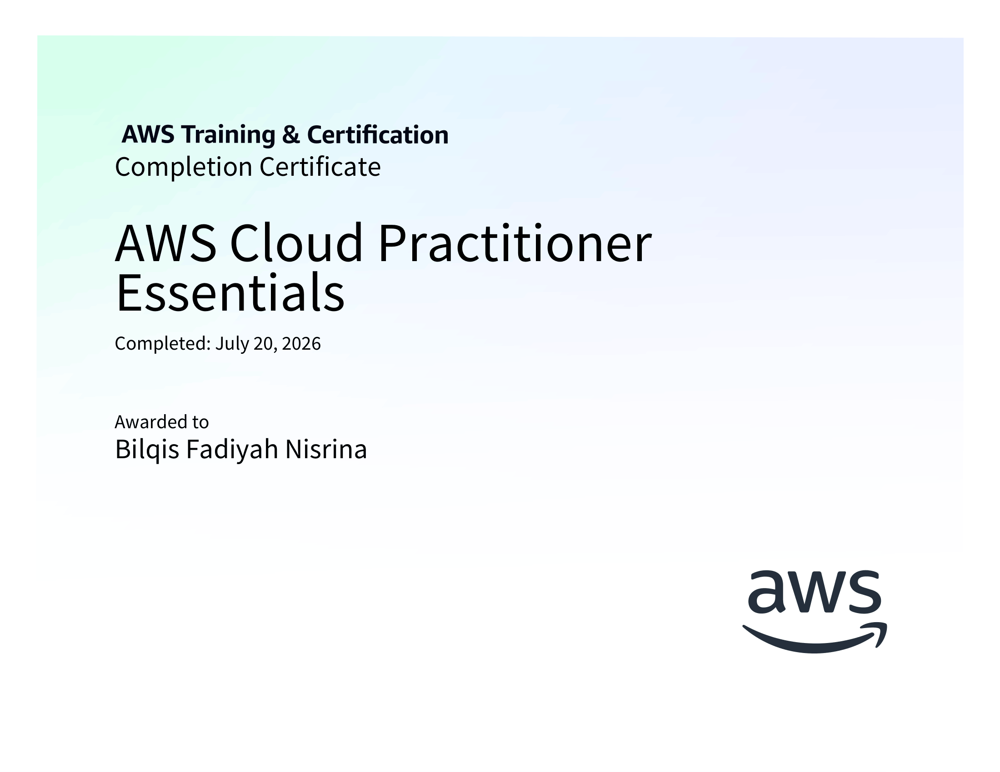
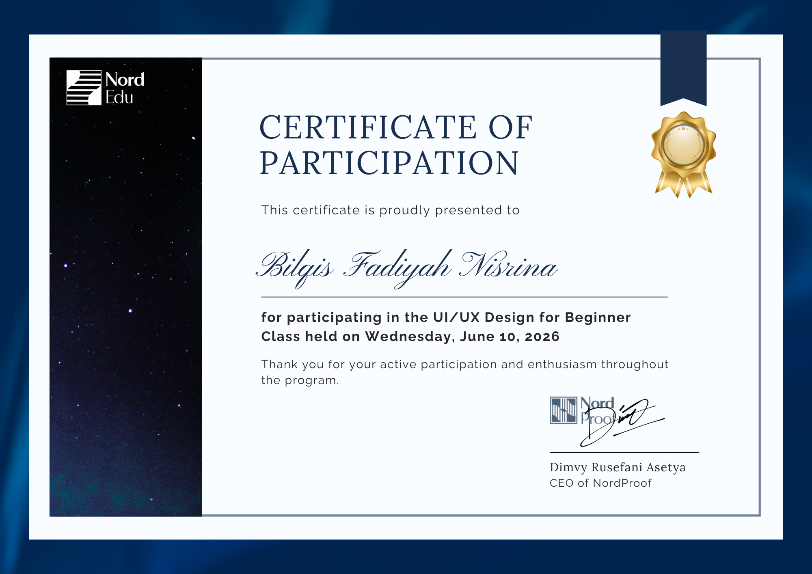
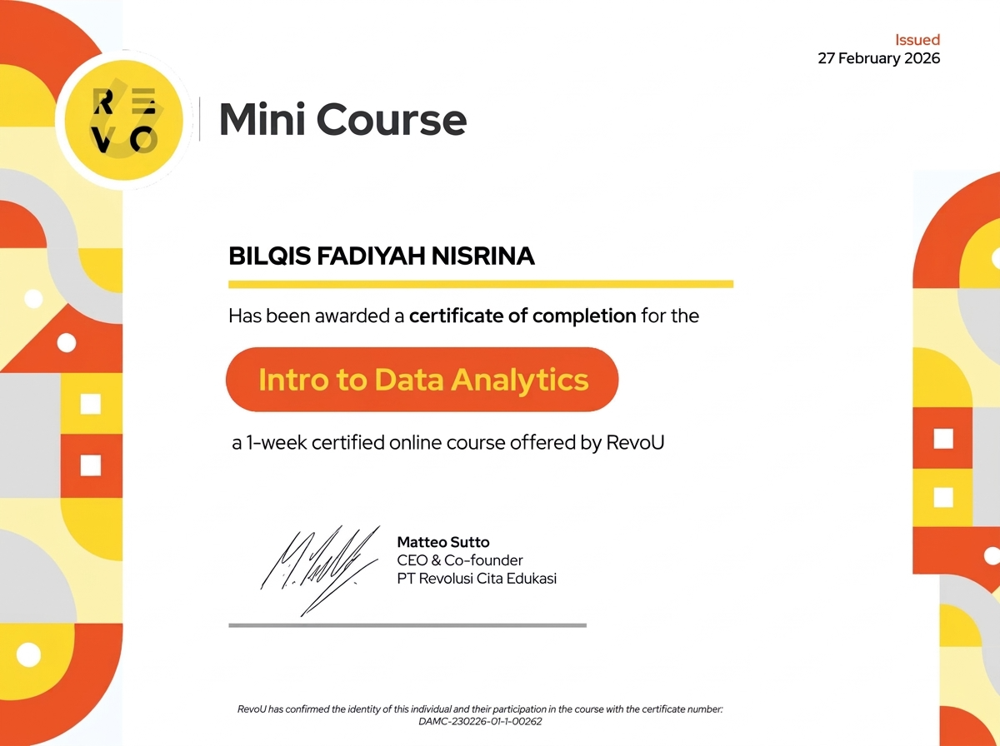

Mahasiswi Sains Data dengan pemahaman kuat dalam analisis data, machine learning, dan visualisasi data. Terampil mengolah data mentah menjadi wawasan berguna mengandalkan Python, SQL, dan dashboard interaktif.

Memiliki kemampuan analitis, komunikasi, dan kerja tim yang baik, serta terbiasa menyelesaikan proyek akademik dengan tenggat waktu ketat. Berminat mengembangkan karir di bidang data dan teknologi untuk memberikan kontribusi nyata dalam penyelesaian masalah berbasis data.
S1 Sains Data
Mata Pelajaran Relevan:
Bahasa & sistem database untuk pengolahan data terstruktur.
Pemodelan cerdas, OLAP, dashboard, hingga antarmuka interaktif.
Platform pengerjaan serta karakter kerja profesional.
Mata Kuliah Data Warehouse — Universitas Negeri Surabaya
Mata Kuliah Machine Learning — Universitas Negeri Surabaya
Mata Kuliah Interaksi Manusia & Komputer — Universitas Negeri Surabaya
Divisi Perlengkapan
Klik pada kartu untuk melihat bukti foto sertifikat dalam ukuran penuh.

Amazon Web Services (AWS) — Juli 2026
Pelatihan Online mengenai konsep dasar cloud computing dan arsitektur infrastruktur AWS.

NordEdu — Juni 2026
Sertifikat partisipasi kelas desain antarmuka pengguna (UI/UX) dasar yang diselenggarakan oleh NordEdu.

RevoU — Februari 2026
Pelatihan Online pengolahan dataset, analisis eksploratif, serta penyajian wawasan analitis.